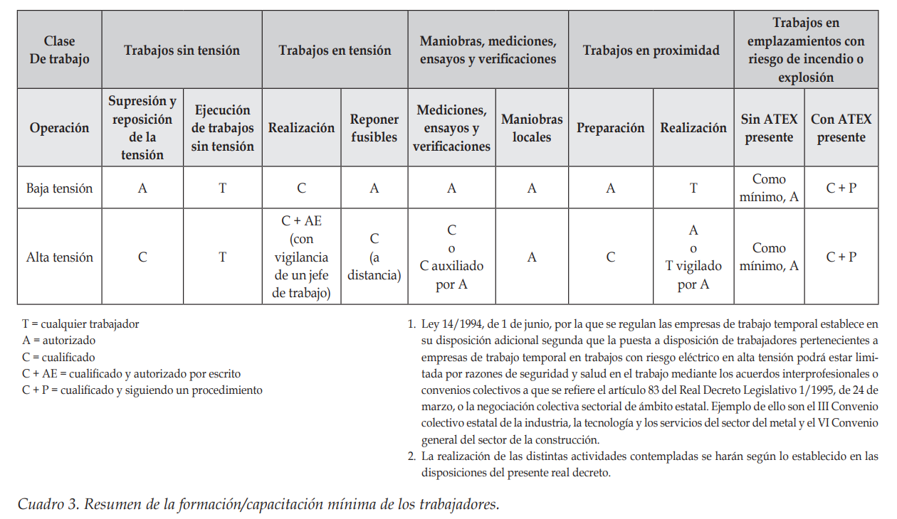

UT5 - Gestió de recursos ====================== 1.- Recursos empresarials ------------------------- Les empreses disposen de diversos recursos per a dur a terme la seva tasca: - **Recursos materials:** actius físics dels que disposa l'empresa, com per exemple: + Edificis + Maquinària + Vehicles + Eines - **Recursos humans:** Format per les persones que integren l'organització - **Recursos tècnics:** + Procediments, metodologies, tècniques. + Patents - **Recursos financers:** capacitat de disposar de fonts de finançament tant pròpies (capital social), com alienes (préstecs, proveïdors) - **Recursos intangibles:** Imatge de marca. Per exemple, que val tenir la marca Nike. 2.- Gestió de recursos humans ----------------------------- Avui en dia es considera que els recursos humans són els més valuosos de l'empresa, fins i tot per davant d'avantatges tècniques. Per tant la gestió del l'equip és clau a l'hora d'aconseguir l'èxit en la tasca fixada. ### 2.1.- Gestió de personal S'encarrega de definir els llocs de feina i per quantes persones han de ser ocupats. La planificació es realitza en funció de varis paràmetres: - **Experiència de l'empresa:** Si l'empresa ha viscut situacions similars podrà predir millor la mida i la composició del seu equip. - **Estratègies d'expansió o de localització:** Són estratègies contraposades. La primera succeeix quan una empresa vol abastar àrees més grans, degut a això és possible que augmenti el percentatge de segons quins grups de treballadors i disminueixi (en percentatge) un altre. Per altra banda les estratègies de localització són aquelles en les que l'empresa concentra els seus serveis en una zona més reduïda. Aquestes estratègies d'expansió o concentració poden no ser només geogràfiques. - **Condicions contractuals:** Si s'ha de donar resposta a un projecte concret es necessitarà incorporar un perfil molt concret i per un temps determinat a l'equip de l'empresa. #### 2.1.1 Hores home Un dels conceptes més utilitzats per la gestió de personal és el de hores-home. Que són la quantitat d'hores que una persona hauria de dedicar per realitzar una tasca concreta. Naturalment aquest concepte és una primera aproximació, ja que una mateixa tasca realitzada per dues persones en lloc d'una pot durar més o menys que la meitat depenent de si apareixen sinergies o no. **Per exemple:** <blockquote style="border-radius: 25px; border: 2px solid #73AD21; background: #f5f5d6; padding: 20px"> <p>Segons l'experiència del nostre encarregat d'obra per muntar els mecanismes d'un edifici es triga 210 hores-home. Si ho vull acabar en una setmana laboral quants de treballadors es precisaran?</p> <p>En aquest cas hem de tenir en compte que la persona dedica al muntatge menys de les 8 hores de jornada diària, degut als descans, preparacions i desplaçaments. Suposem en aquest cas que de la jornada laboral del temps dedicat al muntatge només es disposen de 6,5 h·pers/dia.</p> <p>Per altra banda la setmana laboral només dura 5 dies, per tant:</p> <p align="center"><img src="https://latex.codecogs.com/svg.latex?NT=\frac{D}{t\cdot{J}}=\frac{210}{5\cdot{6.5}}=6.46\; \text{treballadors}"></p> <p> A on: <ul> <li><b>NT</b> és el nombre de treballadors necessaris</li> <li><b>D</b> és la durada de la tasca prevista en hores home</li> <li><b>t</b> és el temps que trigarà l'empresa a executar la tasca en dies</li> <li><b>J</b> és la durada d'una jornada efectiva de treball</li> </ul> </p> <p>És a dir, necessitaríem a 6 treballadors a jornada completa i 1 treballador amb contracte a mitja jornada.</p> </blockquote> Les planificació ha de ser realista, i flexible als vaivens de la càrrega de feina. A més ha de ser equilibrada en quant a la relació entre llocs directius i productius. Finalment s'ha de considerar la carrera laboral dels treballadors, de tal manera que el treballador pugui assumir més competències cada cop. ### 2.2 Selecció de personal La selecció de personal comença pel _curriculum vitae_, com a resposta a una oferta de feina o a l'enviament espontani pels candidats. El departament de recursos humans haurà de filtrar els candidats mitjançant criteris excloents o valorables. Acabada la selecció és habitual a petites i mitjanes empresses realitzar una entrevista personal, enfocades en principi a valorar la competència per al lloc de feina. A grans empreses i multinacionals també és habitual realitzar proves psicotècniques o d'idiomes. **Exercici** <blockquote style="border-radius: 25px; border: 2px solid #73AD21; background: #f5f5d6; padding: 20px"> Pertanys al departament d'enginyeria i instal·lacions d'una empresa instal·ladora de GLP i sistemes elèctrics en general i a locals amb risc d'incendi i explosió. La teva empresa s'ha adjudicat un contracte de 320.000€ per a l'execució de 3 benzineres, i tu lideraràs l'equip que durà a terme la instal·lació elèctrica (tenda, sortidors, auto-rentat, il·luminació exterior, marquesines i equips a pressió). Redacta (amb la plantilla corporativa) un document amb els criteris excloents i valorables (amb una ponderació) </blockquote> ### 2.3 Anàlisi del lloc de feina Consisteix en definir exhaustivament les diferents tasques que executarà el treballador que l'ocupi. És a dir es defineix el lloc no a la persona. Per a fer-ho es disposen de les següents tècniques: - Observació: Quines tasques realitzen actualment els treballadors? Les haurien d'estar fent? N'haurien d'assumir de noves o ni ha algunes que no li corresponen? Per exemple: un treballador ha de controlar el seu propi inventari, l'ha de preparar? Ha de realitzar l'informe de feina? Ha de verificar la seva pròpia instal·lació? Quins riscos laborals s'observen? - Entrevistes: Personals o al caps del departament. - Enquestes: Estudi estadístic de les respostes a uns formularis. **Exemple** Quines tasques hauria de realitzar un _tècnic de manteniment elèctric en baixa tensió a edificis d'habitatges_? - Manteniment preventiu - Manteniment correctiu - Gestió de recanvis - Documentar avaries - Documentar peces defectuoses - Formació als usuaris - Comunicació amb el client - Reportar al coordinador ### 2.4 Formació Els reptes, tècniques, tecnologies als que ha de respondre una empresa varien constantment. Per adaptar-se és necessària la formació del personal: - **Formació interna:** La realitza el personal de l'empresa. Té un efecte multiplicador de la formació externa o de la investigació individual. - **Formació oferida pels fabricants:** Per tal d'assegurar la correcta instal·lació dels seus productes així com de crear una fidelització ja sigui per afinitat o per l'ús de sistemes propis de la marca. - **Formació en PRL:** Fonamental i obligatòria. - **Formació subvencionada:** És realitzen gràcies als crèdits anuals dels que disposa una empresa en funció de la seva cotització, [per a més informació](https://ebogestion.es/credito-de-formacion/) - webinar: seminari web. Un seminari és un estudi amb detall de un tema en concret. Per exemple, cerca i reparació d'averies per baixa resistència d'aïllament a instal·lacions d'enllumenat públic. - MOOC: _Massive Online Open Courses_ Són iniciatives que ofereixen algunes universitats per transferir coneixement a un gran nombre de persones a qualsevol lloc del mon de manera gratuïta. ### 2.5.- Prevenció de Riscos Laborals (PRL) És una altra de les funcions del departament de RRHH. Per al sector elèctric a part dels riscos generals podem trobar el risc elèctric i les feines en altura. #### 2.5.1.- Risc elèctric El [RD 614/2001](https://www.insst.es/documents/94886/96076/g_electr.pdf/46679419-d4cc-461e-8da1-4b2e65df9146), estableix unes disposicions per a la protecció del risc elèctric i distingeix 3 tipus de treballadors: - **Treballador autoritzat:** treballador que ha estat autoritzat per l'empresari per a realitzar determinats treballs amb risc elèctric, sobre la base de la seva capacitat per a fer-los de manera correcta, segons els procediments establerts en aquest Reial decret. - **Treballador qualificat:** treballador autoritzat que posseeix coneixements especialitzats en matèria d'instal·lacions elèctriques, a causa de la seva formació acreditada, professional o universitària, o a la seva experiència certificada de dues o més anys. - **Cap de treball:** persona designada per l'empresari per a assumir la responsabilitat efectiva dels treballs <p align="center"><p></p></p> #### 2.5.2 Treballs en altura Sempre que es treballi en una superfície més elevada que el terra es considerarà treballs en altura. A partir de 2 metres és obligatori l'ús de una serie de mesures i per menys de 2 metres és el servei de prevenció qui establirà les mesures i equips necessaris. #### 2.5.3 Registre d'equips de protecció individual L'empresa ha de proporcionar tots els equips, per tal de garantir aquest fet l'empresa haurà de disposar de una acta d'entrega d'EPI per cada treballador, a més existirà un registre d'EPIs disponibles a l'empresa així com al treballador al qual estan assignats. ### 2.6 Organigrama d'una empresa elèctrica. - **Director general:** és la persona amb major autoritat a l'empresa. D'ell depenen la resta de directors. - **Director comercial:** és el responsable de la recerca de clients, de la presentació de licitacions a concursos públic, de l'atenció comercial. - **Director tècnic:** és el responsable de la gestió d'instal·lacions i projectes. Decidirá quins són els procediments de l'empresa així com els medis que es necesiten, tindà al seu càrrec al responsable d'instal·lacions, al responsable de manteniment, al responsable d'enginyeria i al responsable de qualitat i PRL. Per sota d'aquests responsables es troben els caps d'equip. 3.- Gestió de recursos materials -------------------------------- ### 3.1.- Adquisició i detecció de necessitats Es segueix un procediment similar al de la unitat 2. Tot i que a diferencia d'aquell aquestes adquisicions són per a recursos que romandran a l'empresa. A part de la compra, existeixen també altres opcions com són: - **_Leasing_** Lloguer amb dret a compra. No obstant hi ha terminis mínims i no és possible tornar l'equip abans de que acabi. S'utilitza sobretot per equips cars. - **_Renting_** un lloguer estàndard, sense opció a compra, però a mitjà o llarg termini per a obtenir condicions més avantatjoses. S'utilitza sobretot per a vehicles. A més el _renting_ és completament deduïble tant a l'IRPF, com a l'impost de societats. De la mateixa manera que l'IVA. ### 3.2.- Emmagatzemament i distribució S'ha de comptar amb les despeses d'emmagatzematge i les mesures de seguretat per als equips de gran valor econòmic. Amb els equips en _leasing_ sol ser obligatòria la contractació d'una assegurança contra robatoris. Per a la distribució dels equips s'ha de distingir entre els de **valor mitjà-baix** que es sol assignar a un treballador en concret, el qual en serà responsable; i els de **gran valor** que s'assignen puntualment per part del coordinador a qui pertoqui. ### 3.3.- Control i manteniment. S'haurà de crear un procediment de control de l'ús i l'estat així com un pla de manteniment, i en cas de que sia necessari calibracions. 4.- Indicadors de gestió ------------------------ ### 4.1.- Indicadors de gestió de recursos humans No s'han d'entendre com un mecanisme de pressió cap als treballadors si no com una eina per a millorar la gestió, s'ha de tenir present el lema «el que no es mesura no es coneix»: <p align="center"><img src="https://latex.codecogs.com/svg.latex?\begin{array}{l}\text{Indicador d'hores per treballador}=\dfrac{\text{HPT}}{\text{NT}}\\[5mm]\text{Absentisme}=\dfrac{\text{hores-persona d'abs\`encies}}{\text{HPT}}\\[5mm]\text{\'Index d'hores extres}=\dfrac{\text{total hores extres}}{\text{HPT}}\\[5mm]\text{Productivitat}=\dfrac{\text{Producci\'o}}{\text{HPT}}\\[5mm]\text{Freqüència d'accidents}=\dfrac{\text{n\'umero d'accidents}}{\text{HPT}}\cdot1\:000\:000\\[5mm]\text{\'Index de severitat}=\dfrac{\text{dies perduts}}{\text{HPT}}\cdot1\:000\:000\\[5mm]\text{\'Index de rotació de treballadors}=\dfrac{\text{n\'umero de treballadors que deixen l'empresa}}{\text{NT}}\\[5mm]\text{\'Index de tipus de feina}=\dfrac{\text{n\'umero de treballadors tècnics}}{\text{número de treballadors administratius}}\\[5mm]\text{\'Index d'import\`ancia de salaris}=\dfrac{\text{cost salarial}}{\text{cost total de producci\'o}}\end{array}"></p> A on: - HPT: Són hores-persona treballades - NT: Número de treballadors ### 4.2 Indicadors de servei al client <p align="center"><img src="https://latex.codecogs.com/svg.latex?\begin{array}{l}\text{\'Index de compliment de terminis}=\dfrac{\text{instal·lacions entregades amb endarreriment}}{\text{num. total instal·lacions}}\\[5mm]\text{Qualitat de la facturació}=\dfrac{\text{factures emeses amb errors}}{\text{total de factures emeses}}\\[5mm]\text{Pendents de facturaci\'o}=\dfrac{\text{comandes pendents de facturar}}{\text{total comandes}}\end{array}"></p> ### 4.3.- Indicadors de serveis <p align="center"><img src="https://latex.codecogs.com/svg.latex?\begin{array}{l}\text{Nivell de qualitat}=\dfrac{\text{n\'umero instal·lacions sense defectes}}{\text{número total instal·lacions}}\\[5mm]\text{Nivell de repetició de defecte}=\dfrac{\text{n\'umero instal·lacions amb defecte x}}{\text{número total instal·lacions amb defectes}}\end{array}"></p> 5.- Eines informàtiques d'ús general ------------------------------------ ### 5.1 _Suite_ ofimàtica Com _Libre Office_ o _MS Office_ es componen de: - Processador de texts - Fulla de càlcul - Programa de presentacions - Base de dades ### 5.2 Aplicacions de comptabilitat i nòmines - NominaPlus - Contaplus - HK Nóminas - GesLaboral - NominaSol ### 5.3 Aplicacions per a pressupostos i gestió de costs - Arquímedes - Presto